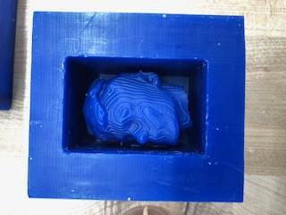
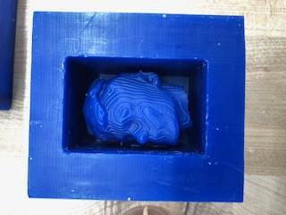
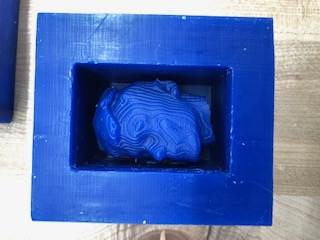

Statue File
Trevor's face file
Sphere file
Index
I started off by creating my statue on Mesh Mixer. I scanned my face, and then put my face onto one of the body selection, and then put the body onto a column. I then meshed everything together. I then saved the file as an STL. I then downloaded the file onto a USB. I plugged the USB into the 3D printer and printed it off. After, I cropped out my face from my statue file, and saved the new file as an STL and sent it to Mr. Gerber. He then printed it out so that we could later make our chocolate pieces. I then had to create a hollow object. I created a sphere and designed it on Fusion 360. I downloaded it as a USB and printed it off the 3D printer.

Statue File
Trevor's face file
Sphere file
Index